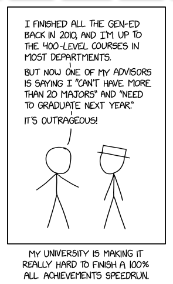
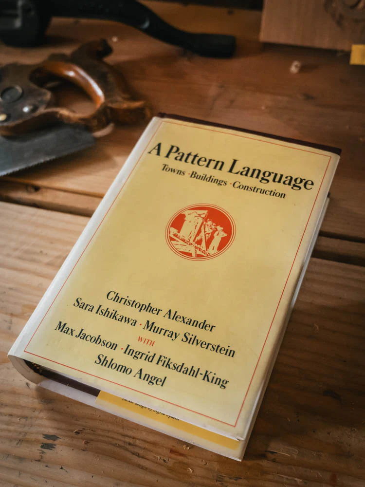
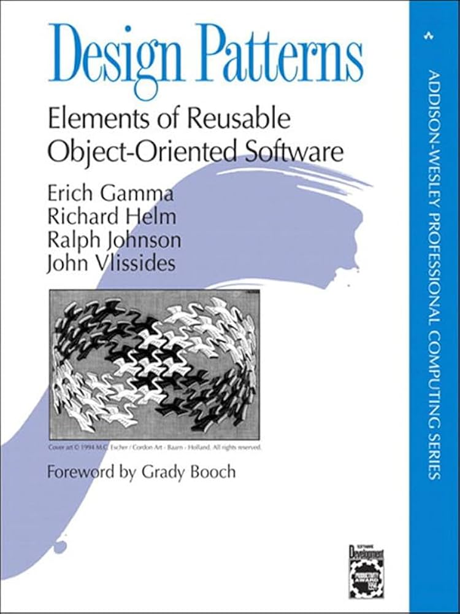
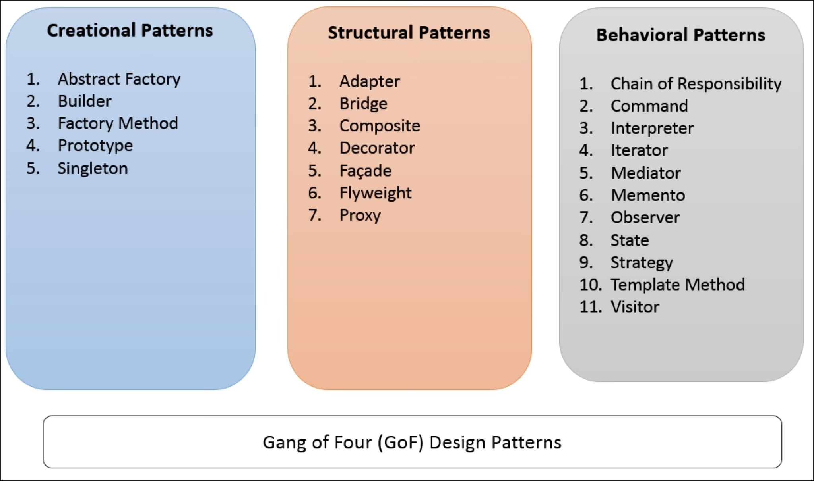
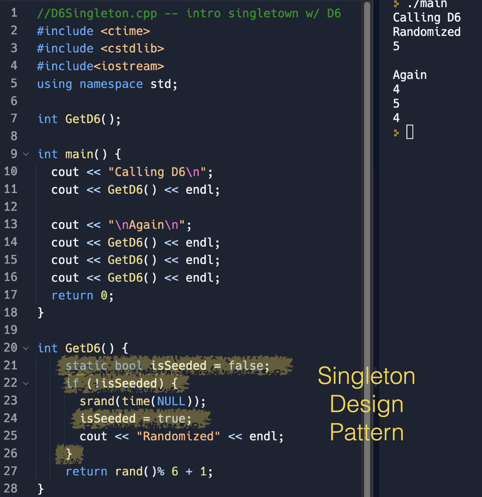
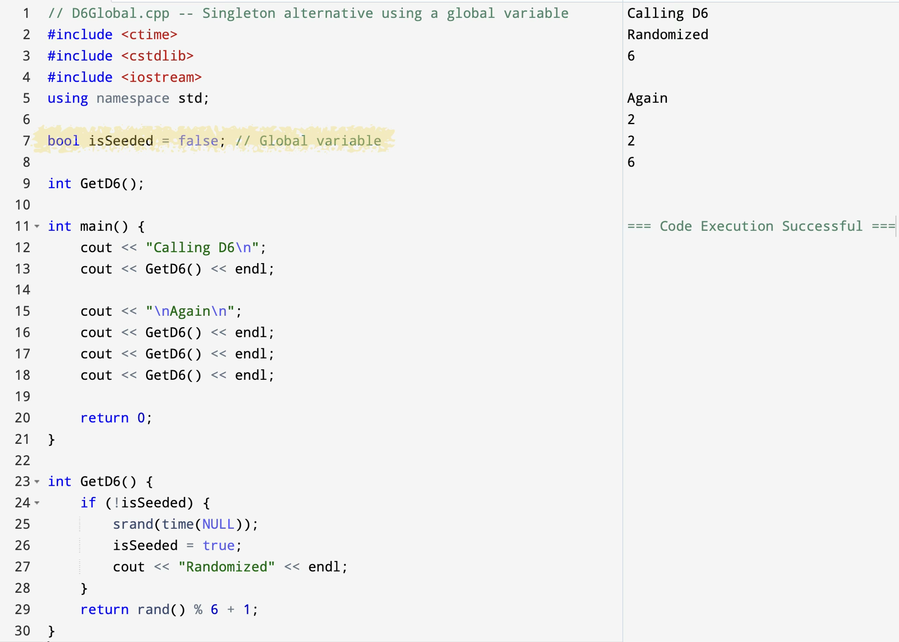

C++

static local variable is created once.static is a mechanism, not the main design idea.


| Rule | Meaning |
|---|---|
| one resource | the program should not create several copies of the same resource |
| controlled access | other code reaches the resource through one function |
| shared state | callers see the same stored data |


static value is created once.static local variables when a function intentionally needs memory between calls.static as a shortcut for avoiding parameters.Each call returns a new value because id keeps its previous value.
static int count.| Pattern idea | Recurring problem |
|---|---|
| Singleton | exactly one shared resource |
| Adapter | make one interface fit another |
| Template Method | keep a stable process with replaceable steps |
A log file name is a small example because the program may want one coordinated output path.
CISP 400 · Fowler